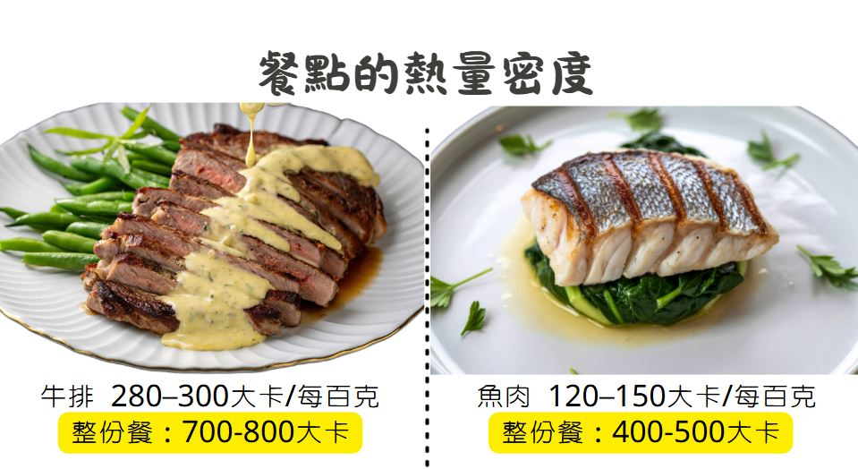
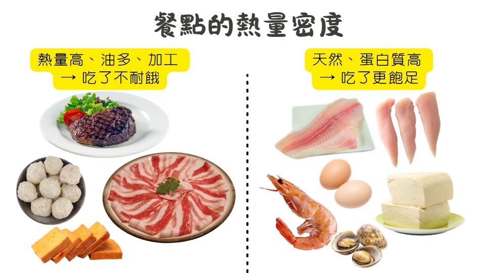

從「算熱量」到「吃對份量」的視覺攻略
許多人以為碳水化合物是肥胖的元凶，但真正讓你變胖的是總熱量攝取超過消耗，跟吃的是碳水還是脂肪無關。
同樣 200 大卡的蔬菜沙拉
體積大、纖維多
吃完很有飽足感
同樣 200 大卡的油脂
只有一小口
完全吃不飽
不需要帶食物秤出門，你的手就是最方便的份量估算工具：
1 份 ≈ 1 個拳頭
1 份 ≈ 手掌大小（含厚度）
1 份 ≈ 碗 / 半碗
1 份 ≈ 拇指大小
每一「份」食物的營養素含量標準，是你規劃飲食的基本工具：
| 食物六大類 | 醣類 (g) | 蛋白質 (g) | 脂肪 (g) | 熱量 (kcal) |
|---|---|---|---|---|
| 全穀雜糧類 | 15 | 2 | + | 70 |
| 豆魚蛋肉類（低脂） | + | 7 | 3 | 55 |
| 豆魚蛋肉類（中脂） | + | 7 | 5 | 75 |
| 豆魚蛋肉類（高脂） | + | 7 | 10 | 120 |
| 乳品類（脫脂） | 12 | 8 | + | 80 |
| 乳品類（低脂） | 12 | 8 | 4 | 120 |
| 乳品類（全脂） | 12 | 8 | 8 | 150 |
| 蔬菜類 | 5 | 1 | + | 25 |
| 水果類 | 15 | + | + | 60 |
| 油脂與堅果種子類 | + | + | 5 | 45 |
其他等量換算：粥、麵、冬粉、米粉、地瓜、芋頭、南瓜 → 半碗；燕麥片 3 湯匙；綠豆（熟）2 湯匙。
優先順序由左到右，每份約 7g 蛋白質
等量換算：雞蛋 1 顆 ＝ 豆漿 240c.c. ＝ 傳統豆腐 2 小格 ＝ 嫩豆腐半盒 ＝ 牡蠣/蛤蜊 3 湯匙。

雞胸肉、魚肉、蝦
豆腐、蛋白
100g ≈ 120–150 kcal
同熱量吃更多
五花肉、培根、香腸
加工肉品
100g ≈ 200–250 kcal
隱藏脂肪

份量控制之後，還要看「烹調油」和「醬料」。同樣的食材，不同的烹調方式，熱量天差地別：
魚肉 120-150 kcal/100g
整份餐 400-500 kcal
低熱量密度
醬料＋油 → 熱量翻倍
一碗炒飯吸附 2-3 湯匙油
高熱量密度
低 GI 飲食的好處：延長飽足感、減少血糖震盪、降低嘴饞。
| 想吃的東西 | Trade-off 策略 |
|---|---|
| 想喝拿鐵？ | 午餐少吃半碗飯 |
| 想吃炸雞？ | 去皮再吃，減少大量油脂 |
| 想喝手搖飲？ | 選無糖，或下一餐減少澱粉 |
| 朋友聚餐大餐？ | 前後兩餐吃清淡一些 |
一個理想的減脂便當，應該包含這四個要素：